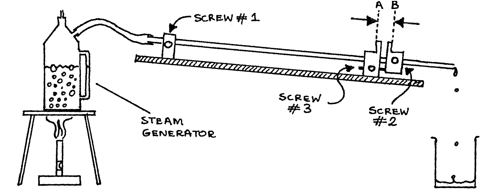

D1-1: Linear Expansivity¶
Apparatus¶
Gas burner or a stove; heating stand; steam generator; expansion sample; small beaker or dish; meter stick; micrometer; thermometer; stack of books, table of linear expansivities of common materials

Procedure¶
- Set up apparatus as shown above. Be sure the sample slopes away from the steam generator, screw #1 is very tight, and screw #3 is very loose. Be certain there is water in the steam generator.
- Loosen screw #2 and push the sliding metal piece up against the leg which holds the sample. Tighten screw #2 to lock the sliding metal piece in this position. Measure the distance \(AB\) with a micrometer. NOTE: The metal faces at \(A\) and \(B\) are not perfectly flat or parallel. You must measure \(AB\) at the very edge of the metal pieces and then use the exact same location for all future measurements.
- Measure the length, \(L_0\),of the sample. Measure from the centers of the tightened screws #1 and #2.
- Measure the room temperature.
- Light the gas burner or stove. After steam begins flowing steadily through the tube wait 3 minutes and then measure \(AB\) again.
Observations¶
\(AB\) before heating = ________ m
\(AB\) after heating = ________ m
\(\Delta L\) = change in length = ________ m
\(L_0\) = length of sample between screws 1 and 2 = ________ m
\(\Theta_T\) = room temperature = ________ °C
\(\Delta \Theta\) = change in temperature of the sample = ________ °C
Theory¶
The coefficient of linear expansion is determined from the relation \(\Delta L = L_0 \alpha \Delta \Theta\) where \(\alpha\) is the average of the coefficient of linear expansion over the temperature range.
Analysis¶
- What is the coefficient of linear expansion of the sample?
- What material is the sample? Explain your choice by refering to a table of linear expansivities of common materials.
- List 4 assumptions you made in determining the coefficient for the sample. For each assumption justify it or account for error.